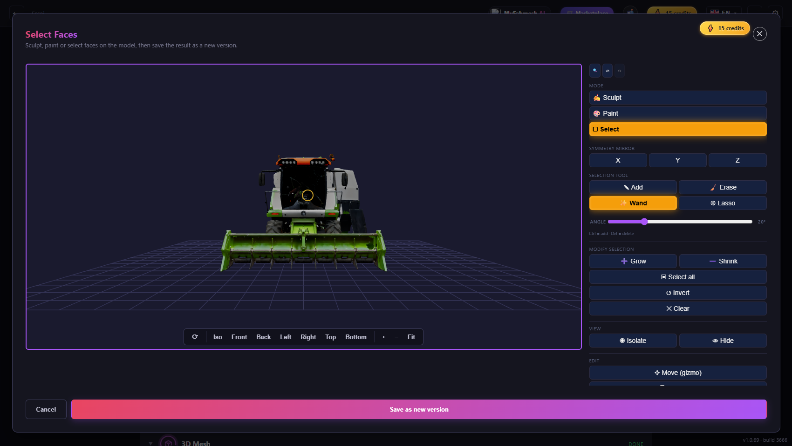
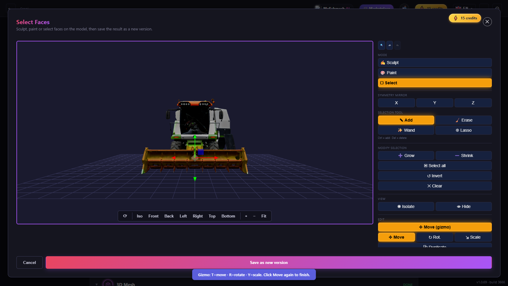
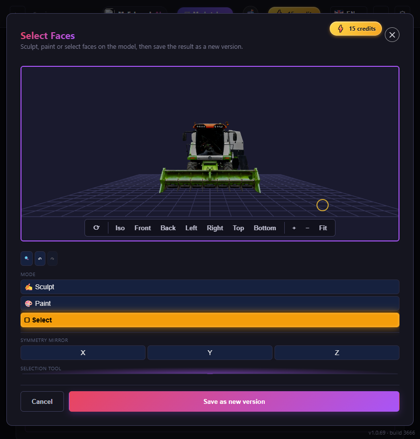

Outil « Sélectionner des faces » : trois dispositions proposées
Proposition, sans toucher au code livré. Toutes les maquettes ci-dessous reprennent les jetons de cloud/public/app/styles/index2.css (couleurs, rayons, police, bouton ambré .tool-active), le gabarit .modal-card.fen-3d et une vraie capture de la moissonneuse du harnais de test. Les chiffres de faces affichés (18 240 faces, 4,4 %) sont factices : l'application n'a aujourd'hui aucun compteur. Les boutons de chaque maquette sont cliquables (outil actif, onglets, effacer la sélection) mais ne font rien d'autre.
0. État actuel (mesuré dans le navigateur, build 1.0.69)



1. Inventaire des contrôles (mode Select)
Fréquence supposée : très fréquent · fréquent · rare · destructif. Source : cloud/public/app/index.html (blocs me-*), index2.js (_meSetSelTool, _meStartMove, gestionnaires me-sel-*). « y » = position dans la colonne à 1700 × 960 (hauteur visible 693 px, contenu 939 px).
Raccourcis existants (tous minuscules ou invisibles)
| Raccourci | Effet | Où c'est indiqué |
|---|---|---|
| Ctrl+Z | Annuler (_meUndo) | Infobulle du bouton ↶ seulement. Pas de Rétablir au clavier. |
| Suppr / Retour arrière | Supprimer la sélection, sans confirmation (annulable) | Ligne de 9 px « Ctrl = add · Del = delete » |
| Ctrl / Maj + clic | Ajouter à la sélection (baguette, lasso) | Même ligne de 9 px + infobulles |
| T R Y | Déplacer / Rotation / Échelle (gizmo ouvert seulement) | Infobulles + bandeau temporaire « Gizmo: T=move… » |
| Échap | Ferme toute la fenêtre (_closeMeshEdit) sans confirmation, donc perd les modifications non enregistrées | Nulle part. Risque réel d'erreur. |
| Molette / glisser | Caméra (barre Iso / Front / Back… dans le viewer) | Barre de vues |
2. Diagnostic ergonomique chiffré
Hauteur visible de la colonne selon l'écran (mesuré)
| Fenêtre | Viewer (h) | Colonne visible | Contenu | Dupliquer (bas) | Supprimer (bas) | Rayon (bas) |
|---|---|---|---|---|---|---|
| 1920 × 1080 | 714 | 791 | 939 | 674 visible | 855 caché | 897 caché |
| 1700 × 960 | 616 | 693 | 939 | 674 visible | 855 caché | 897 caché |
| 1440 × 900 | 560 | 637 | 939 | 674 caché | caché | caché |
| 1366 × 768 | 436 | 513 | 939 | caché | caché | caché |
| 1280 × 720 | 391 | 468 | 939 | caché | caché | caché |
Distance souris pour les enchaînements courants (1700 × 960, centre du viewer ≈ 650, 445)
| Enchaînement | Actuellement | Cause |
|---|---|---|
| Sélectionner (pinceau) → Dupliquer → déplacer | ≈ 880 px jusqu'à Duplicate ; 1 clic. Le gizmo s'ouvre tout seul sur la copie, mais ses 3 boutons poussent Duplicate sous le pli | Tout est à l'extrême droite, le viewer à l'extrême gauche |
| Sélectionner → Supprimer | ≈ 1 050 px + 1 défilement (ou la touche Suppr, que rien n'annonce) | Supprimer est l'avant-dernier contrôle de la colonne |
| Baguette → Étendre → Isoler | 3 clics, ≈ 710 + 150 + 190 px. L'apparition du curseur d'angle (+40 px) décale tous les boutons du dessous : les clics suivants partent sur le mauvais bouton | Mise en page non stable |
| Changer le rayon en cours de sélection | défilement + glissement à 1 000 px et retour, soit ≈ 2 000 px d'aller-retour, à chaque réglage | Curseur tout en bas, alors qu'on s'en sert en permanence |
Contrôles sans retour d'état
Compteur de faces (inexistant), rayon (valeur 0.05 en texte de 10 px, sans unité), Isoler / Masquer (bascules sans témoin hors du viewer), Garder le reste (case lointaine de Rogner), symétrie X/Y/Z (visible en Select mais sans indication qu'elle s'applique à la sélection), « Move (gizmo) » (reste ambré, mais les 3 sous-boutons ne disent pas lequel est le mode courant sans regarder le jaune), curseur d'Intensité visible en Select où il ne sert vraisemblablement qu'à Sculpt/Paint (à confirmer avant de le masquer).
Autres défauts relevés. Le bouton Rogner (destructif) est collé à une case à cocher et à « Inverser les normales » ; Supprimer et Rogner ne se distinguent que par un rouge pâle. Le commentaire du HTML mentionne encore « 130 px » de colonne alors qu'elle en fait 381. En fenêtre étroite (< 900 px), le défilement est celui du corps entier : on ne voit plus le modèle quand on atteint le bouton.
Variante A : palette d'outils à gauche + barre d'actions flottante immersive
Le viewer prend toute la largeur. Les outils (qui ne changent pas souvent) sont dans une palette verticale d'icônes à gauche, avec infobulle et lettre de raccourci. Les actions sur la sélection apparaissent dans une barre flottante au-dessus de la barre de vues dès qu'il y a au moins une face sélectionnée, à 200 px du centre du viewer. Une puce « état » en haut à gauche donne l'outil, le compteur et le rayon. Plus de colonne de droite.
Select Faces
- Où vont les 33 contrôles
- Palette (7 + 1) : Ajouter, Effacer, Baguette, Lasso, X, Y, Z, Loupe. Puce d'état : compteur, Aucune (✕), Tout, Rayon, Angle (apparaît avec la Baguette). Coin haut droit : Mode, Annuler, Rétablir. Barre flottante : Étendre, Rétrécir, Inverser, Isoler, Masquer, Déplacer, Dupliquer, Supprimer. Menu « Plus ▾ » : Rogner + Garder le reste, Inverser les normales, Lisser. Intensité : dans la puce, seulement en Sculpt / Paint.
- Toujours visible
- Palette, puce (outil + compteur + rayon), Mode, Annuler / Rétablir. La barre flottante n'existe que si la sélection n'est pas vide (grisée sinon, pour garder le repère).
- Replié
- « Plus ▾ » (4 actions rares ou lourdes) et l'angle de la baguette (affiché seulement avec elle).
- Enchaînement
- Sélectionner au pinceau → la barre apparaît à 200 px sous le curseur → Dupliquer (le gizmo s'ouvre sur la copie, comme aujourd'hui) → la barre devient Déplacer · Rot. · Échelle · Terminé. Aucun déplacement de la souris vers le bord de l'écran.
- Raccourcis affichés
- Lettre sur chaque icône de la palette (B E W L), Ctrl+D, Ctrl+I, Ctrl+A, Suppr, [ ] pour le rayon, Échap = désélectionner. Infobulle riche (nom + touche + description) au survol, déjà ouverte sur la maquette.
- Gizmo et Dupliquer
- Déplacer / Rot. / Échelle sont des états de la barre flottante (le bouton « Déplacer » se déplie en 3 modes + « Terminé »). Dupliquer est à gauche de « Plus ».
- Destructif / erreur
- Supprimer isolé à droite par un séparateur, rouge ; Rogner relégué dans « Plus ». Pas de fenêtre de confirmation : un toast « 3 120 faces supprimées · Annuler » (6 s, Ctrl+Z toujours valable). Échap désélectionne d'abord ; fermer la fenêtre avec des modifications non enregistrées demande confirmation.
- Fenêtre < 900 px
- La palette devient une rangée horizontale sous le viewer (icônes seules), la barre flottante reste posée sur le viewer et passe sur deux lignes ; la puce d'état se réduit à « 18 240 faces ».
- Parité bureau / site
- Mêmes ids, mêmes gestionnaires. Le HTML est à refaire dans
index.htmletindex2.html, le CSS dans les deuxindex2.css. Les couches ajoutées sur le canvas doivent laisser passer les événements souris (le lasso utilise déjà une couche à z-index 900).
Variante B : colonne de droite à en-tête fixe + onglets évolutive
On garde la colonne de droite (même largeur, même gabarit .fen-3d) mais elle est réorganisée : un en-tête fixe (mode, outil actif, compteur de faces, rayon) et une rangée d'actions rapides toujours visibles (Dupliquer, Déplacer, Supprimer), puis quatre onglets : Sélection, Transformer, Visibilité, Réglages. Aucun défilement : chaque onglet tient dans la hauteur du viewer.
Select Faces
Isoler / Masquer sont des bascules : le bouton reste ambré tant qu'elles sont actives et un témoin « ◉ Isolé » apparaît dans l'en-tête.
Intensité : masquée en mode Sélection si elle n'y sert à rien (à vérifier avant).
- Où vont les 33 contrôles
- En-tête fixe : Mode (3), Loupe, Annuler, Rétablir, compteur, Aucune, Rayon. Actions rapides fixes : Dupliquer, Déplacer, Supprimer. Onglet Sélection : 4 outils, Angle, Étendre, Rétrécir, Tout, Inverser. Onglet Transformer : Déplacer / Rot. / Échelle, Lisser, Inverser les normales, zone sensible (Rogner + Garder le reste). Onglet Visibilité : Isoler, Masquer, Tout afficher. Onglet Réglages : Symétrie X Y Z, Intensité, Loupe.
- Toujours visible
- Mode, compteur, outil actif, rayon, Annuler / Rétablir, et les trois actions les plus employées. Hauteur totale ≈ 600 px : pas de défilement même à 1366 × 768 avec la barre de pied (à valider en navigateur).
- Replié
- Tout ce qui n'est pas de l'enchaînement courant : symétrie, intensité, visibilité, lissage, normales, rognage.
- Enchaînement
- Onglet Sélection (par défaut, à l'ouverture) : outil → viewer ; puis, sans changer d'onglet, Dupliquer / Déplacer / Supprimer dans la rangée fixe. L'onglet Transformer s'ouvre seul quand le gizmo démarre.
- Raccourcis affichés
- Étiquette x dans chaque bouton (B E W L, Ctrl+A, Ctrl+I, Ctrl+D, T R Y, Suppr), rappel Esc sous le compteur.
- Gizmo et Dupliquer
- Déplacer est dans la rangée fixe (bascule) ; ses trois modes se trouvent en tête de l'onglet Transformer, ouvert automatiquement. Dupliquer : rangée fixe, et de nouveau dans Transformer.
- Destructif / erreur
- Supprimer : rouge, dernière position de la rangée fixe (séparée de Dupliquer), toast « Annuler ». Rogner : dans un cadre « Zone sensible » à bordure rouge, au fond de l'onglet Transformer, jamais sur la même ligne qu'une action courante. Échap : désélectionne, puis (second appui) propose de fermer.
- Fenêtre < 900 px
- La colonne passe sous le viewer, en-tête et rangée rapide en
position: sticky: on garde compteur et Supprimer à l'écran tout en voyant le modèle. - Parité bureau / site
- Les ids sont conservés : la logique JS ne change pas. Même HTML à reporter dans les deux fichiers, même CSS (
.fen-forminchangé).
Variante C : barre du bas sur deux rangées + menu contextuel clavier / souris
Plus de colonne : le viewer prend toute la largeur. Sous lui, une barre à deux rangées : Outils (mode, outil, rayon, symétrie, annuler) et Sélection (compteur + actions). Le clic droit sur le modèle ouvre un menu contextuel avec les actions sur la sélection, claviers affichés. La barre occupe la zone libre aujourd'hui sous le viewer (≈ 108 px à 1700 × 960).
Select Faces
- Où vont les 33 contrôles
- Rangée 1 « Outils » : Mode (3), 4 outils, Rayon, X Y Z, Loupe, Annuler, Rétablir (+ Angle de la baguette qui remplace la symétrie quand la baguette est active, + Intensité en Sculpt / Paint). Rangée 2 « Sélection » : compteur, Étendre, Rétrécir, Inverser, Tout, Aucune, Isoler, Masquer, Déplacer, Dupliquer, « Plus ▾ » (Rogner + Garder le reste, Inverser les normales, Lisser), Supprimer. Menu contextuel : Dupliquer, Déplacer, Isoler, Masquer, Étendre, Inverser, Inverser les normales, Rogner…, Supprimer.
- Toujours visible
- Les deux rangées, en permanence ; viewer plus large (jusqu'à 1 200 px de large au lieu de 800 dans B).
- Replié
- « Plus ▾ » ; l'angle et l'intensité apparaissent selon l'outil.
- Enchaînement
- Sélectionner → clic droit sur le modèle → Dupliquer (zéro déplacement de la souris), ou rangée 2 juste sous le viewer (≈ 350 px au plus).
- Raccourcis affichés
- Dans le menu contextuel et sur les boutons de la barre ; bandeau de premier lancement « Astuce : clic droit sur la sélection ».
- Gizmo et Dupliquer
- « Déplacer » ouvre une mini-barre en surimpression du viewer (Déplacer · Rot. · Échelle · Terminé) comme dans A. Dupliquer : rangée 2 + menu.
- Destructif / erreur
- Supprimer et Rogner en rouge, en fin de rangée / de menu, séparés par un filet. Le libellé du menu annonce le nombre (« Supprimer 18 240 faces »). Toast « Annuler » identique à A et B.
- Fenêtre < 900 px
- La barre passe sur 4 rangées sous le viewer (la rangée Sélection se replie en défilement horizontal). Le clic droit est remplacé par un appui long (tactile).
- Parité bureau / site
- Mêmes ids ; deux fichiers HTML + CSS. Risque : le clic droit de la caméra (panoramique par défaut des contrôles orbitaux, à vérifier dans le code du viewer) entre en conflit avec le menu ; il faudrait distinguer un clic bref d'un glissement, et le menu n'est pas découvrable sans l'astuce.
Fenêtre étroite (< 900 px) : schémas
Actuel
A
B
C
4. Tableau comparatif
Scénarios chiffrés « clics + défilements (≈ px souris depuis le centre du viewer) », à 1700 × 960, estimés d'après la géométrie des maquettes et des mesures ci-dessus (sélection elle-même non comptée). « B+ » = B plus la barre flottante contextuelle de A (voir recommandation).
| Critère | Actuel | A : palette + barre flottante | B : en-tête fixe + onglets | C : barre du bas + clic droit | B+ (recommandée) |
|---|---|---|---|---|---|
| S1 Sélectionner → Dupliquer → déplacer | 1 clic, 0 déf. (≈ 880 px) ; gizmo ouvert : Dupliquer rogné | 1 clic, 0 déf. (≈ 220 px) | 1 clic, 0 déf. (≈ 760 px), onglet Transformer s'ouvre seul | 1 clic droit + 1 clic (≈ 0 à 350 px) | 1 clic (≈ 220 px) |
| S2 Sélectionner → Supprimer | 1 clic + 1 déf. (≈ 1 050 px) ou touche cachée | 1 clic (≈ 300 px) ou Suppr annoncée | 1 clic, 0 déf. (≈ 800 px) | 1 clic (≈ 350 px) ou menu | 1 clic (≈ 300 px) ou Suppr |
| S3 Baguette → Étendre → Isoler | 3 clics, mise en page qui saute (+40 px) (≈ 1 050 px cumulés) | 1 touche W + 2 clics (≈ 450 px) | 3 clics, 0 saut (≈ 800 px) | 3 clics (≈ 700 px) | W + 2 clics sur la barre (≈ 450 px) |
| S4 Ajuster le rayon en cours de travail | 1 défilement + 1 glissement, ≈ 2 000 px aller-retour | 0 déf. ; glisser dans la puce (≈ 250 px) ou [ ] | 1 glissement, 0 déf. (≈ 750 px) ou [ ] | 1 glissement (≈ 450 px) | 1 glissement ou [ ] |
| S5 Rogner en gardant le reste | 1 défilement + 2 clics | 3 clics (Plus, case, Rogner) | 3 clics (onglet, case, Rogner) dans la zone sensible | 3 clics (Plus, case, Rogner) | 3 clics |
| Retour d'état (outil, compteur, rayon) | aucun / rayon en 10 px | puce dans le viewer | en-tête permanent | compteur dans la barre | en-tête + puce |
| Lisibilité (densité) | faible : 24 boutons identiques | élevée (icônes + groupes), mais icônes à apprendre | élevée, libellés complets | moyenne : ≈ 30 boutons sur 2 lignes très serrées | élevée |
| Effort d'implémentation | : | 6 à 8 jours | 2 à 3 jours | 5 à 6 jours | 4 jours (B 2,5 + barre 1,5) |
| Risque de régression | : | élevé : couches sur le canvas (lasso, curseur-pinceau, loupe), événements souris, tous les modes Sculpt / Paint à refaire | faible : ids et gestionnaires intacts, regroupement HTML + CSS | moyen à élevé : clic droit déjà pris par la caméra, barre à placer dans le gabarit | faible à moyen : la barre ne fait que .click() sur les boutons existants |
Compat. gabarit .fen-3d et autres fenêtres 3D | oui | non : deux colonnes supprimées, nouveau modificateur .fen-immersif, incohérent avec Sculpt, Paint, Lissage… qui gardent la colonne | oui : même grille, même largeur (--vz-w-corps inchangé), cohérent avec les autres fenêtres | partielle : le viewer s'élargit, rompt la règle commune « mêmes dimensions de visualiseur » du 25/10 | oui |
| Traductions à refaire | : | ≈ 15 chaînes (infobulles, « faces », menu Plus) | ≈ 8 (onglets, compteur, zone sensible, Tout afficher) | ≈ 12 (rangées, menu contextuel, astuce) | ≈ 12 |
| Fenêtre < 900 px | mauvais : le modèle sort de l'écran | bon | bon (en-tête sticky) | moyen (barre sur 4 rangées) | bon |
5. Recommandation
B, puis la barre flottante de A : « B+ ». Commencer par B (colonne à en-tête fixe, quatre onglets, trois actions rapides toujours visibles, compteur de faces, rayon en haut). C'est la seule variante qui règle à elle seule les défauts mesurés : plus aucun défilement (Supprimer et Rayon n'étaient jamais visibles même à 1920 × 1080), plus de saut de mise en page quand l'angle de la baguette apparaît, un retour d'état permanent, et les raccourcis sur les boutons. Elle garde le gabarit .fen-3d et la règle commune du 25/10 (visualiseur de la même taille dans tous les outils), garde tous les ids et tous les gestionnaires, et coûte 2 à 3 jours.
B ne réduit toutefois pas la distance souris (la colonne reste à droite). On y ajoute donc, en deuxième étape (1,5 jour), la barre flottante de A, limitée à Dupliquer / Déplacer / Inverser / Supprimer au-dessus de la barre de vues : elle ne fait que déclencher les boutons existants, donc sans nouvelle logique. A en entier est écartée (refonte des trois modes, 6 à 8 jours, rupture avec les autres fenêtres) ; C est écartée à cause du conflit du clic droit avec la caméra et de la découvrabilité faible.
Trois décisions à valider avec toi avant de coder : (1) Échap ferme-t-il encore la fenêtre ? Proposé : il désélectionne d'abord, et demande confirmation s'il reste des modifications ; (2) Supprimer sans fenêtre de confirmation mais avec toast « Annuler » ? Proposé : oui ; (3) raccourcis lettres B E W L [ ] : OK dans une fenêtre où T R Y existent déjà ?
6. Plan d'implémentation de B+ (non commencé)
- Garde-fou préalable. Écrire d'abord
tests/bureau-interface/selection-ergonomie.test.mjs: (a) la liste des 33 idsme-*du mode Select existe exactement une fois danscloud/public/app/index.htmletsrc/renderer/index2.html; (b) les deux fichiers ont le même ensemble d'ids. Il passe sur l'état actuel : c'est la base de non-régression. - Compteur.
index2.js(les deux) : fonction_meSelCount()(parcours de COLOR_0 : la sélection est stockée dans la couleur orange du sommet,_meSelHas()existe déjà) et_meRefreshHud()appelée à la fin de chaque écriture : pinceau, baguette, lasso, étendre, rétrécir, tout, inverser, effacer, supprimer, undo / redo. Limiter le coût (rafraîchir aupointeruppendant un coup de pinceau). Test : sélection simulée, le texte du compteur suit. - HTML.
cloud/public/app/index.htmletsrc/renderer/index2.html, bloc#me-panel: ajouter#me-head(mode, undo / redo / loupe déplacés, compteur, rayon),#me-quick,#me-tabs+ quatre.me-pan; déplacer les boutons existants sans changer leurs ids. Retirer le commentaire périmé « 130 px ». - CSS.
cloud/public/app/styles/index2.cssetsrc/renderer/styles/index2.css: classes.me-head,.me-tabs,.me-pan,.me-quick,.me-zone, sticky sous 900 px ; réutiliser les jetons existants (.tool-btn,.tool-active,.fen-label). Ne rien changer à--vz-w-corpsni.fen-form. - Onglets et état. JS court : changement d'onglet, mémorisation de l'onglet par
localStorage(try / catch, convenance seulement), ouverture automatique de « Transformer » quand le gizmo démarre (_meStartMove), curseur d'angle déplacé dans l'onglet (plus de saut de page). Masquer l'Intensité en mode Select après vérification de son usage. - Raccourcis et Échap. Étendre le gestionnaire existant (
keydownprès de_closeMeshEdit) : B E W L, [ ], Ctrl+A Ctrl+I Ctrl+D, Ctrl+Maj+Z, Échap en deux temps (après décision de l'utilisateur). Toujours ignorés dans un champ de saisie. - Toast « Annuler ». Après Supprimer / Rogner : bandeau 6 s qui appelle
_meUndo. Texte + clé de traduction. - Barre flottante (phase 2).
#me-floatposée dans#me-viewport(pointer-events limités à la barre, sous le lasso à z-index 900), 4 boutons qui fontdocument.getElementById('me-sel-…').click(). Affichée seulement si_meSelCount() > 0. - Traductions. Nouvelles chaînes dans
cloud/public/app/lang/_additions.js(et le pendant du bureau) : fr, es, zh, hi, ar ;garde-traduction.jsdoit passer. Ne pas citer de nom de moteur. - Vérifications.
node build/check-js-syntax.mjs,node build/check-fonctions-portees.mjs,cd cloud && npm testet les teststests/bureau-interface/*(dontediteur-et-reglages.test.mjs, déjà modifié sur la branche principale), puis le harnais navigateur à 1920 × 1080, 1700 × 960, 1366 × 768 et 860 × 900 : Supprimer et Rayon visibles sans défiler, aucun débordement, captures avant / après (git diff --statavant commit). - Livraison. Un commit par étape (1 → 2 → 3-5 → 6-7 → 8 → 9), entrée dans
AGENT_LOG.md, bureau (restart inutile : renderer seulement, Ctrl+R) puis site (npm run buildpuisnpm run deploy, sur accord).
Fichiers à toucher au total : cloud/public/app/index.html, src/renderer/index2.html, cloud/public/app/index2.js, src/renderer/index2.js, les deux styles/index2.css, les fichiers de langue, plus le nouveau test. Aucun fichier de main/, de Modal ni du worker.